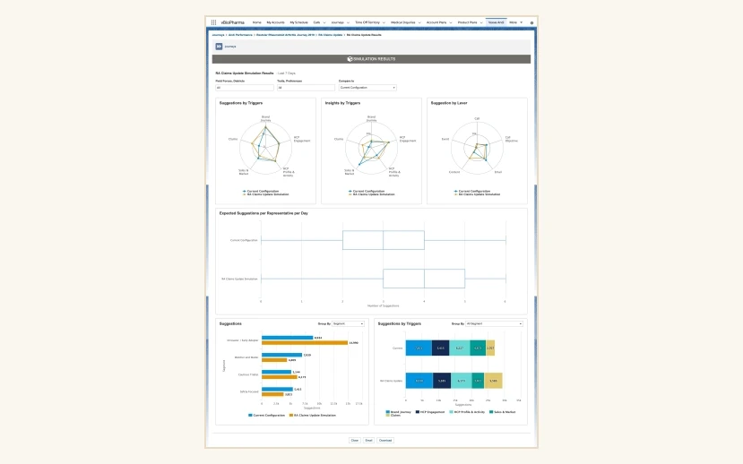
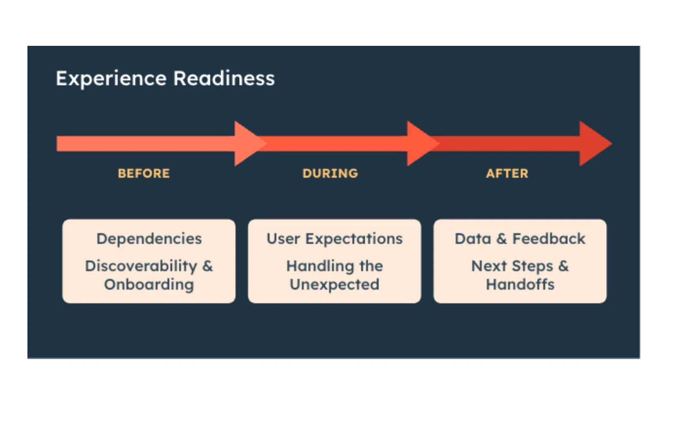
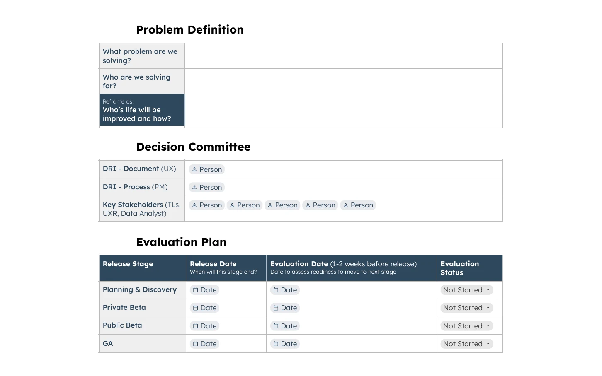
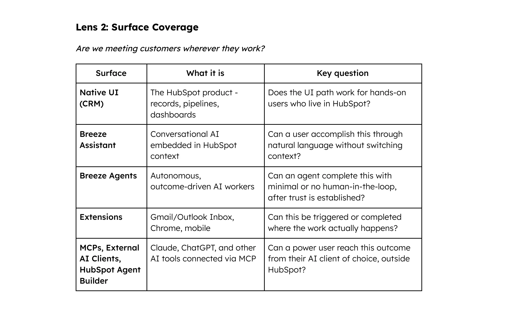

Leadership
How I lead
My job is to make the why so clear that my team can decide well without me. I've led groups of up to 10 designers and researchers, spanning 6 product teams, through reorgs, leaves, and a fast shift to AI.
Along the way I helped found the Notetaker Product Group and led it as Design Group Lead, and owned the onboarding audit and vision that set the framework for the groups I led. I also served as interim manager for the Prospecting group while our director was on sabbatical and a new manager was starting, then onboarded that manager.
Principles
Distil the why.
I translate company strategy into a few clear outcomes.
Just enough context, then move.
I help teams gather the right amount of insight, not too little and not too much, and ship.
High bar, fast pace.
Speed and quality aren't a trade-off when the bar is explicit.
Leading through AI change
Designing for AI since 2019
My AI work started well before the current wave. In 2019 I was design advisor on Veeva Andi, an AI application that suggested next best actions to pharma field teams inside Veeva CRM. I designed its initial prototypes in Axure and the rules and simulation screen Veeva featured at launch. Andi let companies manage the rules behind its suggestions and simulate their impact before rolling them out, an early lesson in keeping people in control of AI.
So when AI changed what we were building every quarter at HubSpot, I made sure the team changed with it. I earned certifications myself, built prototypes with Claude Code and Lovable, co-led Figma Upleveling, and coached the team to design AI features people trust, including how to bring the user's perspective into AI eval exercises so quality was measured the way customers experience it.

Certified Designing and Building with AI, eCornell 2025 · AI Fundamentals, IBM 2024 · AI For Everyone, DeepLearning.ai 2024
People I've grown
Growth stories
- A designer promoted SPD1 → SPD2, unanimously
- An associate designer promoted to Product Designer
- A design manager mentored into the role
- Established Veeva's first UX internship program, recruiting interns across 7–8 terms, with several returning and 2 joining full time after graduating
- Mentored a designer through HubSpot's Women in Product program, who went on to be promoted
- Community mentoring and guest lectures in Humber College's UX program over several semesters
Systems that outlast me
Frameworks teams still use

Experience Readiness Checklist
A launch-readiness bar adopted by three product groups.

Success Criteria 2.0
How teams define and measure feature success; other product lines asked to use it.

UX Complete Outcomes
A framework to make sure every surface area and persona is addressed, so we design for sales team outcomes, not just individual reps. Managers need visibility, admins need control, and everyone needs to work the way they prefer, whether in the UI, internal AI assistants, agents, connectors to other AI tools, or APIs, wherever it makes sense. Built on multiple internal research studies on when people use different kinds of AI tools and what they find valuable, it was used by multiple teams for quarterly planning and shared by senior leadership as a reference for future planning.
Plan to hit UX quality with speed
Established a plan that let designers reach a high UX quality bar on a tight turnaround as the product org pivoted to sprints.
Interview Cheat Sheet
A guide that cut leading questions from customer check-ins, paired with recruiting through UX research ops.
Veeva's first design library
Built with engineering as a shared foundation.
Speaking and community
- Two INBOUND 2024 talks, both rated 4.5 against a 4.3 average
- DRI for the Sales Hub vision at the executive offsite: led designers and PMs to write the script and produce the video that aligned the C-suite, VPs, and GMs on strategy
- Panelist at a Designers & Coffee event, on my career path and inclusive design leadership
- Guest lecturer, Humber College UX program
What people say
“A clear talent for bringing clarity to complexity.”
“It is clear that Mandy operates at the next level.”
“You make our group better every day.”
- “An empathetic, collaborative, and supportive leader.” Director of Product, peer review
- “Mandy is a truly inspirational leader.” Colleague
- “Ya'll are the glue that keeps us together.” Designer on the team
- “…helped me quiet my inner saboteur, embrace my strengths, and stay curious.” Design manager, mentee
- “Mandy has been a phenomenal mentor.” Women in Product mentee
- “We're lucky to have you as our UX leader.” Colleague